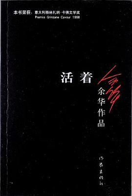
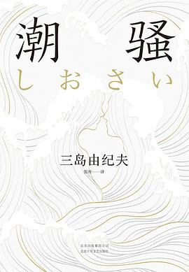

读书清单

作品简介
《活着(新版)》讲述了农村人福贵悲惨的人生遭遇。福贵本是个阔少爷，可他嗜赌如命，终于赌光了家业，一贫如洗。他的父亲被他活活气死，母亲则在穷困中患了重病，福贵前去求药，却在途中被国民党抓去当壮丁。经过几番波折回到家里，才知道母亲早已去世，妻子家珍含辛茹苦地养大两个儿女。此后更加悲惨的命运一次又一次降临到福贵身上，他的妻子、儿女和孙子相继死去，最后只剩福贵和一头老牛相依为命，但老人依旧活着，仿佛比往日更加洒脱与坚强。
《活着(新版)》荣获意大利格林扎纳•卡佛文学奖最高奖项（1998年）、台湾《中国时报》10本好书奖（1994年）、香港“博益”15本好书奖（1994年）、第三届世界华文“冰心文学奖”（2002年），入选香港《亚洲周刊》评选的“20世纪中文小说百年百强”、中国百位批评家和文学编辑评选的“20世纪90年代最有影响的10部作品”。
作者简介
余华，1960年出生，1983年开始写作。至今已经出版长篇小说4部，中短篇小说集6部，随笔集4部。主要作品有《兄弟》《活着》《许三观卖血记》《在细雨中呼喊》等。其作品已被翻译成20多种语言在美国、英国、法国、德国、意大利、西班牙、荷兰、瑞典、挪威、希腊、俄罗斯、保加利亚、匈牙利、捷克、塞尔维亚、斯洛伐克、波兰、巴西、以色列、日本、韩国、越南、泰国和印度等国出版。曾获意大利格林扎纳·卡佛文学奖（1998年）、法国文学和艺术骑士勋章（2004年）、中华图书特殊贡献奖（2005年）、法国国际信使外国小说奖（2008年）等。
读者评论
- 读《活着》的过程我很平静，除了有庆献血而死的描述让我呼吸急促。在那个年代像福贵式的悲剧小人物多如牛毛，他们愚昧，勤劳，坚强，隐忍，他们被时代的洪流裹挟着无法喘息，唯有努力活下去才能活下去。福贵的悲哀是每一个中国人的悲哀，谁都无法幸免。第一次读余华，他看似沉重冷静的描述却字字见血。
- 第一次拜读余华的作品，他在我心中并非大家，但《活着》是唯一让我看了鼻酸的文字。 我想象得到福贵的样子，岁月鞭打在他脸上留下沟壑般的皱纹，黄而黑亮的肤色，充血发黄的“眼白”包围着的黑滴滴的瞳孔，似乎是典型的穷苦农民代表。嗯，还有一只瘦骨嶙峋伴其左右的老牛。 我能想到的仅仅如此，而我想象不出在经历了这么多不幸后，一个人该以怎样的姿态再活下去。福贵身边的人一个接一个以惨烈的方式离开，旧伤未愈又添新伤。
- 好几次读了。我们来这世上一遭，当然不能只为了活着。要追求更长远的人生意义。但对于一些遇到点小挫折就悲伤难过，仿佛全世界只有他一个人运气不佳、波折坎坷的年轻人，实在很有必要看看《活着》。不是叫你来比谁惨的，而是叫你知道，大家都有不容易的时候，每个人这辈子都遭遇过许多苦难。你那点破事儿，根本不值一提！坚强些吧！好好活着！
- 朴素的语言描述了福贵的一生，经历了中国的各个时期，内战、人民公社、文化大革命，福贵还活着，陪他经历这一切的人却纷纷逝世，老的、少的，都顷刻湮没在历史中。中文中的这两个字：活着，太贴主题，不是生活，不是苟活，就是活着。
- 余华笔下的精彩，是他没有废话。一个人为之一生的跌宕起伏，像是一艘破烂的小船挣扎在狂风暴雨的大海里，但这却是很多年以来中国农民的写照：隐忍。有庆之死让我难过了好一阵，二喜的哭又让我心里一凉，所有的悲剧并不是一个人的命不好，而是让人感受到“活着”本身就是一种力量，你以为是命运选择了你，但你能选择人生态度。
- 余华的笔法是残忍而善良的。福贵的命运仿佛神话悲剧一般不可违抗，在旁观者我的视角里不断苦熬着，而作为＂你一生的故事＂中自身的叙述者，他有只是那个灾难时代的普通人一般生活着。末了哼着＂少年去游荡，中年想掘藏，晚年做和尚＂消失在视野中时候，作者又给予读者一丝安慰：活着的意志，是他唯一没被夺走之物。人生对他而言，“窄若手掌又宽若大地”。

作品简介
一部激荡着原始美的小说，一段至为清澈美好的初恋，一个充满生命活力和幸福感的世外桃源
两次入围诺贝尔奖的文学大师三岛由纪夫代表作之一，享誉世界的经典小说
第1届新潮社文学奖，入选日本文部省指定中学语文教科书
暮色渐浓的春日海滨，18岁的渔夫新治偶遇少女初江。少女肤色健康、眉宇沉静，令新治心生感动；少年饱含力量且真诚的黑色眼眸，令初江难以忘怀。在一次次的邂逅中，二人相识并相爱，热情燃烧得日渐炽烈，近得想碰就能碰到，但他们始终没有超越道德的规范。然而，两人幽会的谣言还是传遍了村子。牧歌般的海潮声中，眼看春天就要结束了。
作者自述
我要创作一部牧歌小说，试着描绘我的世外桃源。主人公是一个完美的生活行动派，即使被逼到绝境，但有一种幸运从未远离过他。——三岛由纪夫
名人评价
我得的诺贝尔奖应该颁给三岛。像他这样才华横溢的天才作家，大概两三百年都难遇一个。——川端康成
作者简介
三岛由纪夫（1925-1970）
日本作家，多次入围诺贝尔文学奖。
1949年出版长篇小说《假面的告白》，大获成功；
1954年出版《潮骚》，获新潮社文学奖，入选日本文部省指定中学语文教科书；
1956年出版《金阁寺》，获第8届读卖文学奖。
读者评论
- 一个纯粹、质朴地让我怀疑结局的故事，甚至于看到最后一页，总觉得不可能是这样，总想过度解读一些黑暗的东西才行。原来我已经这么复杂了......最喜欢的人是千代子，“那个人说我很美！”——让我看到了最纯洁的少女之心。
- 《潮骚》在三岛的作品中算不得特别出彩。歌岛对应的原始秩序与神秘超自然的信仰力量结合，提供新治庇护，只要与海相遇，就会重燃激情，获得平静。海域的超自然神力似能消除岛民的一切怨怼，维持岛屿封闭整一的原始秩序（与东京所代表的现代文明—自然被人征服的关系相对，岛上呈现出亘古不变的“天人合一”）从标准意义上讲，结局是美好的，有情人终成眷属。但我依然认为这份美好中饱藏缺憾。新治自始至终都在眺望远方，他想离开海岛从而获得“奇妙的自由”，但最终他仅仅回归了一种“道德上的自由”，而背离了另一种自由的可能。这不能说不是一种缺憾。
- 第一本三岛。沈老的《边城》，三岛的《潮骚》，一曲海湾牧歌，叙尽纯粹的美好。歌岛中长存的新治，伊势海上漂来的初江，坐落于海上乌托邦的邂逅，伴随爱与性的初悸，一切褒贬之词都显做作而多余。这里只有自然，只有海面波动的微风，一缕潮湿袭面，清爽，纯净。
- 太美了。如果说《金阁寺》是毁灭之美，是像大火一样的占有欲、残暴和瞬间的极致灿烂，那么这一本就是大海一样的宽容辽阔，是无法想象的至纯至真至美。看的时候一直在哼《海女》里的那首歌。 终于明白“越过那篝火，来到我身边”是什么样的景象了。 真的太美了！
- 三岛当然有能力创造出这样一个故事。值得注意的是写法，只有千代子是稍显复杂的，因为她是城市大学教育的产物，由此可知歌岛不仅是三岛梦幻中的世外桃源，也是小说的世外桃源。所以这是一部童话。又，读到新治在黑夜的大海中与狂风暴雨抗争时，我终于想起了对应的脸孔。
- 看过的最好的成长小说。关于彼此信赖；关于矢志不渝；关于竭尽全力。“我知道了那船的目的地。船上的生活也好，那艰难险阻也好，我都已经知道了。”“他知道从那场冒险中突围，靠的是自己的力量。”只有自己强大，才能得到美好，守护美好。
置顶